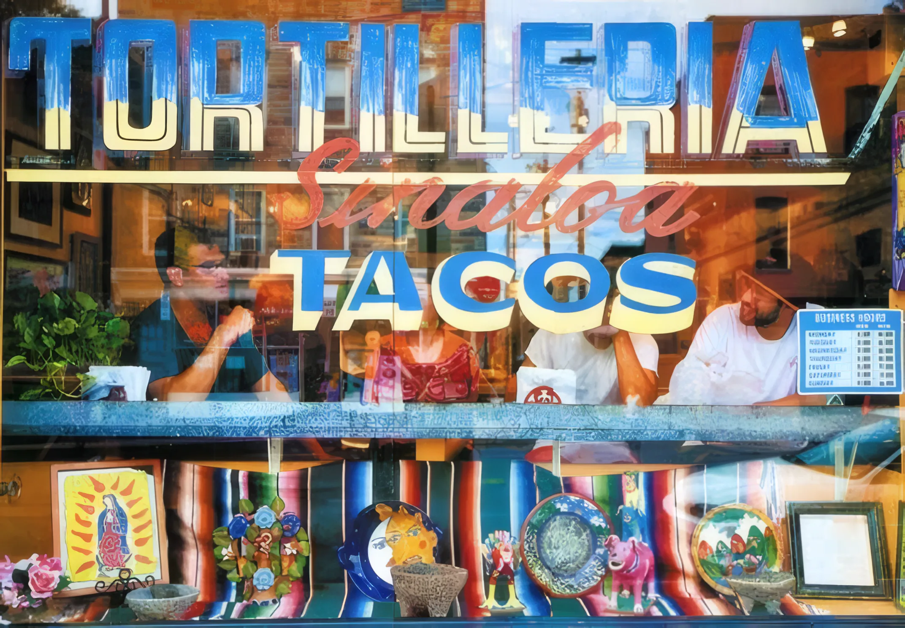

Our story
A tortilleria and taqueria on Eastern Avenue, half a block east of Broadway. Since 2002 we’ve tried to make some of the tastiest and most affordable Mexican food in East Baltimore.

Since 2002
We’ve been here since 2002, and people know us for our fresh tortillas, freshly made tacos and guacamole. Just ask our customers and the critics.
Our neighbors and the office workers around us come from Upper Fells Point, Fells Point, Harbor East, Patterson Park, Washington Hill and Canton, and from points near and far. Our staff is bilingual, so order in English or en español.
Our food is gluten free, and every item on the menu is made from scratch with the freshest ingredients we can get.
The tortillas
Customers trek a ways for our tortillas. They come hot off the press and wrapped in paper, by the half-kilo, the kilo or more: $1.75 for half a kilo, $3.50 for a kilo.
Come in for great taste at a great price. Eat in at the counter, carry out, or have us cater your party.

What people wrote
City Paper’s Best of Baltimore, 2011: Best Mexican Food, Best Tacos and Best Breakfast (the huevos con chorizo). All the press
Tortilleria Sinaloa is everything a taqueria should be. Be sure to try hot, fresh tortillas made fresh daily.
Carnitas tacos “with everything,” served rapido with big slices of lime and two kinds of thick hot sauce, stuffed with steamy, succulent shredded pork…
Best tacos in town. … This is it. Tortillas made on premises and tasty ingredients. I highly recommend stopping in for lunch or a quick dinner any time.
These tortillas are some of the best I’ve ever had — fresh from the tortilla machine.
Fabulous tacos!!! Did not think I would find good Mexican in Baltimore, but I was wrong. Yum!
In the press
- City Paper, Best of Baltimore 2011Readers’ Poll: Best Taco
- City Paper, Best of Baltimore 2011Staff pick: Best Breakfast, huevos con chorizo
- City Paper, Best of Baltimore 2011Best Mexican
- City PaperReview: Cheap Eats
- City PaperSoutheast
- City Paper College GuideA Day in Fells Point, Aug 16, 2010
- The Baltimore SunQuoted above
- Skillet DouxTortilleria Sinaloa
- UrbaniteRun for the Border
- Baltimore StyleFells Point Fiesta
- Jewish TimesPeace and Hominy
- Life with KarmaOur Adventures in Baltimore
- Demandy.com5 out of 5 stars
- YelpTortilleria Sinaloa, Baltimore
Find us
Open now1716 Eastern Ave, Baltimore, MD 21231
Half a block east of Broadway, in Upper Fells Point.
| Monday | 7am – 7pm |
| Tuesday | 7am – 7pm |
| Wednesday | 7am – 7pm |
| Thursday | 7am – 7pm |
| Friday | 7am – 7pm |
| Saturday | 7am – 7pm |
| Sunday | 7am – 6pm |
Neighbors and office workers come from Upper Fells Point, Fells Point, Harbor East, Patterson Park, Washington Hill and Canton, and points near and far.